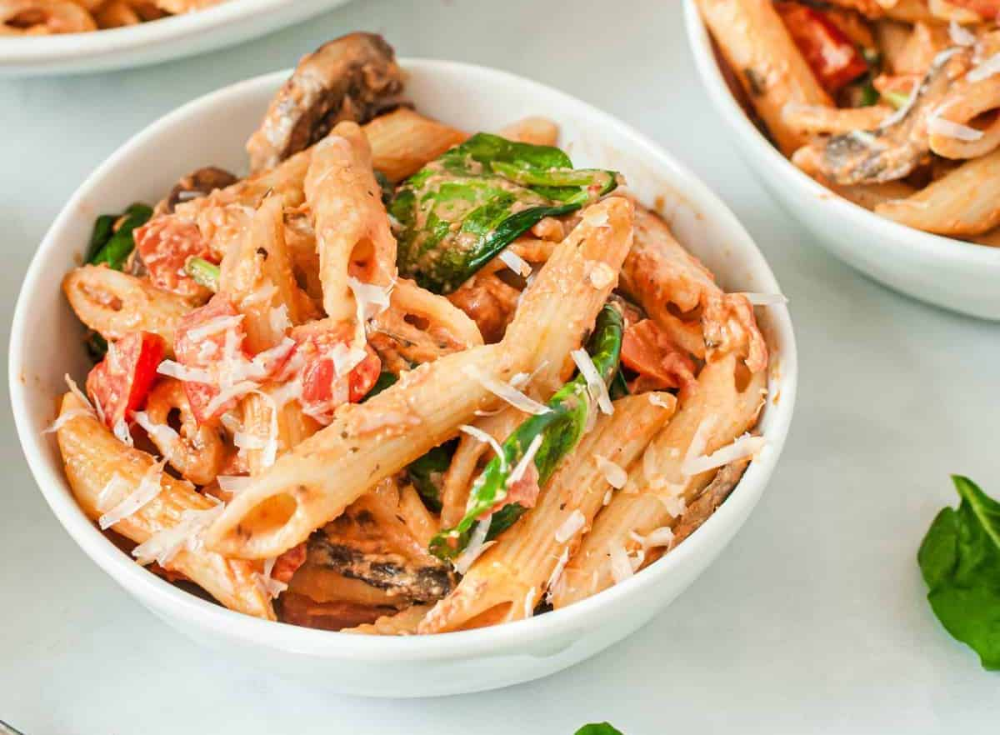

Penne Rosa
 8
servings
8
servings 25
minutes
25
minutes-
 Aimee
Aimee
 Vegetarian
Vegetarian
A recreation of Sooz and Kevin’s favorite dish from Noodles & Company.

1 lbpenne pasta1 tbspolive oil8 ozsliced mushrooms (optional)3 clovesgarlic, pressed1 ½ cupsmarinara sauce½ - 1 tspcrushed red pepper flakes3roma tomatoes, diced3 cupsfresh spinach½ cupheavy whipping cream½ tspsalt¼ tspblack pepper½ cupshredded parmesan cheese
Ingredients
1 lbpenne pasta
Cook penne pasta according to package directions.
1 tbspolive oil8 ozsliced mushrooms (optional)
While pasta cooks, heat olive oil in a large skillet over medium-high heat. Add the sliced mushrooms and cook for about
3 minutes, until mushrooms are tender.
3 clovesgarlic, pressed
To the skillet, add the pressed garlic and cook for an additional minute.
1 lbpenne pasta3 clovesgarlic, pressed1 ½ cupsmarinara sauce½ - 1 tspcrushed red pepper flakes
Stir in cooked and drained penne pasta, marinara sauce, and crushed red pepper flakes.
3roma tomatoes, diced3 cupsfresh spinach
Add in fresh diced tomatoes and spinach. Stir to combine and cook until spinach is mostly wilted.
½ cupheavy whipping cream½ tspsalt¼ tspblack pepper
Stir in the heavy cream. Add salt and pepper. Heat just until warm.
½ cupshredded parmesan cheese
Serve hot with parmesan cheese.